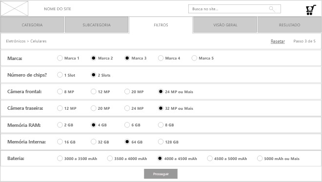

Consultor de produto
Exemplo do padrão consultor de produto.
Informações
Os usuários desejam conselhos sobre como selecionar o melhor produto para eles entre um conjunto de produtos.
Aconselhar os utilizadores sobre produtos com base em restrições, preferências e necessidades usuários têm.
O site tem produtos à venda, on-line ou off-line. O conjunto de produtos disponíveis geralmente é de médio a grande porte, por exemplo, 15 ou mais produtos, para que a seleção do produto apropriado se torne não trivial.
O fluxo de tarefas básicas é o seguinte:
- Descreva as necessidades. O que você deseja fazer?
- Descreva as preferências. O que deveria ter?
- Descreva as restrições. O que deve ser levado em consideração?
- Receba recomendações.
- Revise as necessidades, preferências ou restrições, se necessário.
- Aja sob recomendação.
A estrutura do Consultor de produto é um assistente adaptado. O orientador possui um conjunto limitado de etapas em que os usuários fornecem todas as entradas agrupadas por tópico/aspecto. A etapa final é onde as recomendações são fornecidas de maneira semelhante à dos resultados normais da pesquisa como nas páginas iniciais do produto. Opcionalmente, uma outra etapa pode ser adicionada para comprar o produto selecionado ou enviar mais informações sobre o produto.
Nas primeiras etapas do orientador, os usuários dão entrada configurando uma ou mais das opções disponíveis. Isso pode ser bastante complicado e requer alto conhecimento dos usuários. Quais opções são apresentadas em uma etapa específica podem depender de escolhas anteriores. Quando as opções não dependem uma da outra, podem ser usadas guias. Caso contrário, um design mais baseado em etapas deve ser usado para que os usuários possam ver todas as etapas o tempo todo. Quando os resultados são fornecidos, os usuários devem poder voltar e revisar suas decisões para fazer uma análise hipotética.
Ao exibir resultados, é importante criar um alto nível de confiança nos conselhos reais. Dar uma porcentagem é uma maneira de fazer isso, por exemplo, 100% pode significar que ela cumpre todas as suas preferências. Outras possibilidades é tornar visível como a decisão foi tomada, por exemplo, usando uma matriz com as opções possíveis como no comparador de produtos.
O aconselhamento ocorre como uma conversa em que o consultor faz várias perguntas antes de dar conselhos.